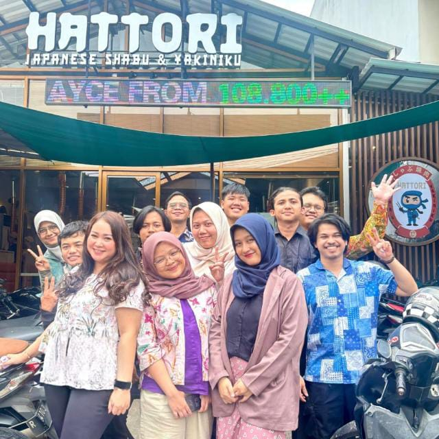

Vol. 01 / Catatan dari Jakarta
Let’s Journey into the World.
Sedikit cerita tentang rekan kerja, obrolan di kantor, dan kabar resign.

Pagi yang terasa sedikit berbeda.
Pagi itu, Kamis, 1 Oktober 2026, langit Jakarta sedikit mendung. Jalanan mulai riuh oleh suara kendaraan bermotor, sementara kamar masih cukup sunyi. Alarm berbunyi pukul 05.30 WIB, ditemani dengung AC yang masih menyala. Kasur terasa nyaman. Sebagai orang yang menyukai hawa dingin, rasanya selalu butuh sedikit usaha untuk beranjak. AC sudah mode Powerful, semangat bangunnya masih loading.
Rutinitasnya seperti biasa: bangun tidur, berdoa sejenak, lalu merapikan kasur. Setelah mandi dan menyiapkan keperluan, aku bersiap berangkat kerja. Aktivitas yang sama setiap pagi, dan kadang memang terasa sedikit membosankan.
Tetapi pagi itu ada sesuatu yang terasa berbeda. Pikiranku berusaha menjalani hari seperti biasa, sementara masih ada yang mengganjal. Sulit dijelaskan dengan kata-kata. Entah kenapa, jadi kepikiran kantor dan orang-orang yang setiap hari kutemui di sana.
Di tempat itu, kami tumbuh bersama dalam sebuah tim. Pekerjaan menuntut kami belajar dan berkembang dengan cepat, tetapi di sela kesibukannya juga terbentuk rasa akrab dan kekeluargaan. Di tengah kerasnya hidup di perantauan, kedekatan seperti itu membuat hari-hari kerja terasa sedikit lebih ringan.
Yang membuat kantor terasa dekat.
Belakangan, ada kabar di kantor bahwa salah satu rekan kerja akan mengundurkan diri. Ia sudah mengajukan pemberitahuan satu bulan sebelum meninggalkan pekerjaannya, atau one month notice. Bagi sebagian dari kami, kabar itu cukup mengejutkan.
Resign memang hal yang wajar dalam dunia kerja. Tetap saja, rasanya berbeda ketika yang akan pergi adalah seseorang yang sudah dekat dengan kita. Seseorang yang selama ini bersedia mendengarkan keluh kesah, bahkan ketika cerita itu hanya perlu didengar. Yang membuat sedikit sedih justru membayangkan hal-hal biasa: percakapan di sela pekerjaan, atau rasa lega setelah selesai bercerita.
Mbak Vita adalah seorang HR yang cukup akrab dengan rekan-rekan di kantor. Perannya terasa strategis karena ia bisa menjaga hubungan baik dengan karyawan maupun manajemen. Ia mau menerima cerita dan masukan, termasuk dari karyawan biasa sepertiku.
Tentu tidak semua cerita harus diteruskan ke atasan. Ada hal-hal yang cukup berhenti sebagai percakapan. Kadang, didengarkan saja sudah membuat hati sedikit lega.
Aku membayangkan, di sisi lain, ia mungkin juga menjadi tempat bercerita bagi atasan. Barangkali mereka pun punya keluh kesah yang tidak bisa dibagikan kepada semua karyawan. Menjaga kepercayaan di antara kedua sisi itu tentu membutuhkan kepekaan.
Ada koneksi yang tidak terlihat di layar monitoring.
Sebagai orang yang sehari-hari berkutat dengan network, aku terbiasa memikirkan cara agar perangkat di segmen jaringan yang berbeda tetap bisa saling berkomunikasi. Tapi di kantor, ada koneksi yang jarang terlihat di layar monitoring: rasa percaya antara orang-orangnya. Kalau boleh memakai sedikit bahasa network, perannya bisa diibaratkan seperti default gateway, pintu penghubung yang membantu komunikasi antar jaringan. Dalam cerita ini, dua sisi itu adalah karyawan dan manajemen, dengan posisi dan tanggung jawab yang berbeda.
Kami datang membawa “paket data” masing-masing. Ada masukan, ada pertanyaan, kadang ada keluh kesah yang sudah terlalu panjang untuk diringkas dalam satu chat. Dia bersedia mendengarkan. Untungnya, kalau mau cerita, kami nggak perlu isi formulir atau bikin tiket dulu. Bisa langsung bicara sebagai sesama manusia.
Begitu tahu ia akan pergi, rasanya seperti menyadari bahwa jalur yang sudah akrab akan berubah. Kami tentu bisa menyesuaikan diri. Tapi mungkin nanti ada momen ketika ingin bercerita, lalu baru ingat: oh iya, dia sudah tidak di sini.
Kalau urusan jaringan, aku bisa mencari rute baru. Untuk kebiasaan bercerita kepada orang yang sama, sepertinya perlu memberi diri sendiri sedikit waktu.
Sedihnya boleh ada. Hangatnya juga.
Meski terasa sedikit sedih, aku percaya setiap orang punya tujuan hidup yang ingin dikejar. Bisa jadi ada langkah baru dalam karier, atau peluang di luar sana yang terasa lebih cocok. Aku pun punya tujuan sendiri, jadi bisa memahami keinginan untuk melanjutkan perjalanan.
Ada yang bilang dunia ini luas, ada juga yang merasa dunia ini sempit. Aku belum tahu mana yang lebih tepat. Mungkin nanti, di lain tempat, kita bisa bertemu lagi. Semoga hubungan baik yang sudah terjalin tetap bisa dijaga.
Aku jadi teringat lagu Bernadya, Kita Buat Menyenangkan. Rasanya cocok buat suasana sekarang. Selagi masih bisa ketemu di kantor, ya tetap bekerja seperti biasa, ngobrol, dan ketawa bersama kalau ada kesempatan.
Ada juga kata yang sering disampaikan Mr. Jayden dan atasan di sini: “Semangat.” Singkat, tetapi cukup membekas saat pekerjaan terasa padat dan melelahkan. Mungkin kali ini, semangat itu juga bisa menjadi bekal untuk perjalanan Mbak Vita berikutnya.
Galeri kenangan
Foto-foto yang mau kusimpan.
Semoga suatu saat kita semua masih ada waktu buat kumpul dan ngobrol lagi. Untuk sekarang, kusimpan foto-foto ini dulu.
Good luck, Mbak Vita
Senang bisa kenal dan kerja bareng, Mbak. Kita sama-sama anak daerah yang merantau ke Jakarta.
Terima kasih sudah mau mendengar. Semoga langkah berikutnya membawa banyak hal baik buat Mbak Vita.
See you at the top.
1 Oktober 2026